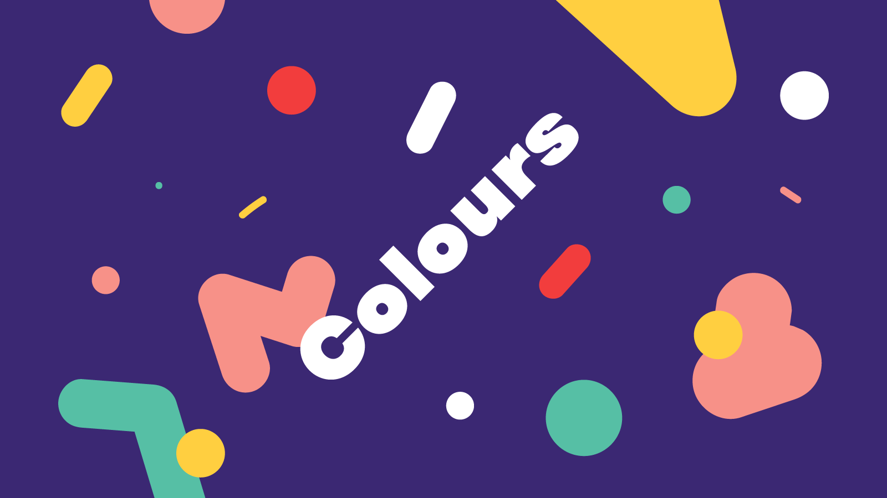

Colours of Ostrava
An energetic teaser with viral sensibilities for this year’s Colours of Ostrava — a Czech music festival famous for its unique industrial surroundings.
Concept, Motion DesignPortfolio of Christian Jánský, a designer working in paper- and pixel-based media.
Selection of projects 2014 – 2015An energetic teaser with viral sensibilities for this year’s Colours of Ostrava — a Czech music festival famous for its unique industrial surroundings.
Concept, Motion Design
An ongoing personal project focusing on alternative approaches to everyday notebooks. How can we make a mundane object exciting again?
Concept, Identity, Screen print, Binding, Web-devAn online store for a small, family owned craft winery known for its 100% organic approach.
UX, UI, Web-devI like to combine traditional graphic design with digital interventions and empower it by thoughtful use of motion & interaction. I believe in clarity using means of typography, structure and rhythm. Automation and facilitation of design through clever use of code is something I am deeply passionate about.
A complete website overhaul for a Czech creative & digital agency. From concept and paper wireframing to UI design & front-end development.
UX, UI, Web-devI was approached to design a new look for Bzenia, a truly authentic winery from Moravia, Czech Republic.
Concept, Identity